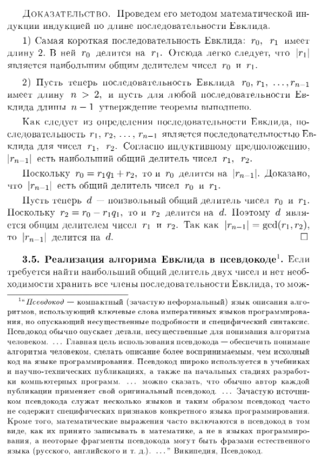
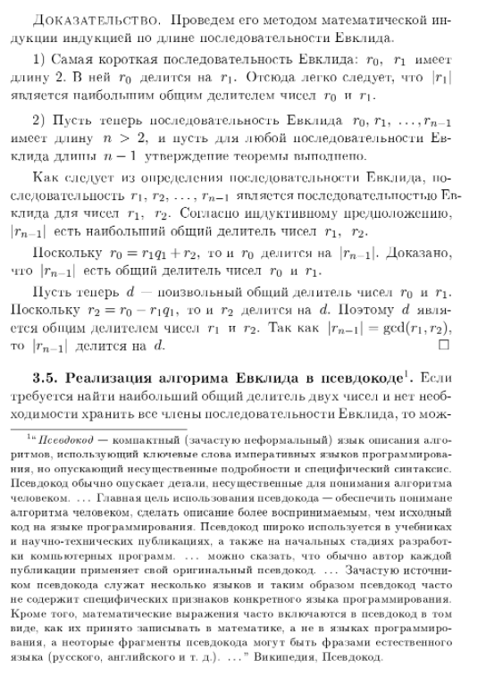
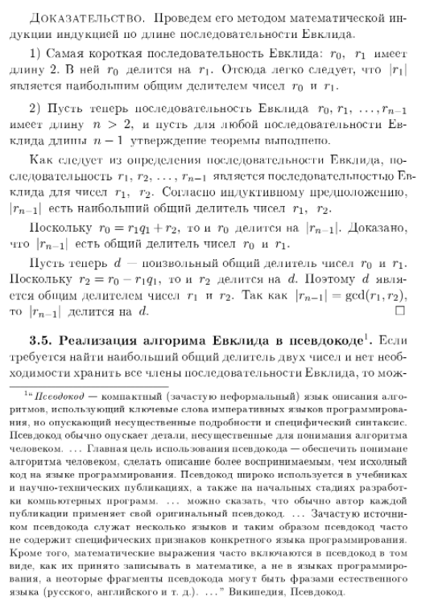

1. Понятие алгебраической операции
Алгебра изучает алгебраические операции. В школьном курсе матема-
тики вы встречались с действиями, производимыми над числами: сложе-
нием, умножением, вычитанием, делением, действиями нахождения про-
тивоположного числа, обратного числа, модуля числа, квадратного кор-
ня из числа. Вы изучали также операции сложения векторов, сложения
и умножения функций. Рассматривались также операции пересечения и
объединения множеств. При изучении каждого из этих действий прихо-
дится обращать внимание на свойства, которые удобно использовать в
рассуждениях.
Оказывается, у различных действий много общих свойств. Для того,
чтобы избежать повторов определений и некоторых рассуждений всякий
раз, когда мы исследуем новую конкретную алгебраическую операцию,
целесообразно посвятить некоторое время изучению алгебраических опе-
раций в общем виде.
1.1. Двухместные (бинарные) алгебраические операции
.
Под
двухместной алгебраической операцией на некотором множестве M по-
нимают функцию1
(отображение) из множества всех пар, составленных
из элементов множества M в само множество M. Поскольку множе-
ство всех пар, составленных из элементов множества есть декартово про-
изведение этого множества на само себя, т.е. M Ч M, то определение
двухместной алгебраической операции в множестве M может быть
сформулировано так:символически записано так:
Определение. Двухместной (бинарной) алгебраической операцией
в произвольном множестве M называется отображение f декартова
квадрата множества M в множеcтво M :
f : M Ч M M .
Вместо f(a, b) = c обычно пишут afb = c . Для обозначения опера-
ций, помимо букв, используют также и специальные знаки: + , , Ч ,
· , , , , , и т. д.
Примеры. 1. Двухместными алгебраическими операциями в основ-
ных числовых множествах служат: сложение и умножение в N , в Z , в
Q и R , а также вычитание в Z , в Q и R.
2. Действие вычитания в множестве натуральных чисел N алгебраи-
ческой операцией не является, так как не для каждой пары натуральных
чисел найдется натуральное число, являющееся их разностью. По этойже причине не является алгебраической операцией деление в N , а так-
же в Z , в Q и R . Впрочем, деление в множестве Q\ {0} уже служит
алгебраической операцией, также, как и деление в множестве R \ {0}.
Замечание. В математике используются и такие действия, (подоб-
ные вычитанию и делению), результат которых определен не для всякой
пары элементов рассматриваемого множества. Такие действия называют
частичными алгебраическими операциями. Частичная бинарная алгеб-
раическая операция в произвольном множестве M представляет собой
отображение некоторого подмножества декартова квадрата множества
M в множество M.
Примеры. 3. Примерами двухместных алгебраических операций в
множестве геометрических векторов могут служить действие сложения
векторов и операция нахождения векторного произведения.
4. Такие действия как умножение геометрического вектора на число и
скалярное умножение векторов алгебраическими операциями не являют-
ся, поскольку не удовлетворяют определению алгебраической операции.
Действительно, обозначим через V множество всех векторов простран-
ства. Используя это обозначение, можно записать, что умножение вектора
на число есть отображение RЧV V , а скалярное умножение это
функция V Ч V R.
1.2. Свойство коммутативности алгебраической операции.
Определение. Говорят, что алгебраическая операция , заданная
в произвольном множестве M обладает свойством коммутативности,
если выполняется
a, b M (a b = b a);
Напомним, что в школе свойство коммутативности называют переме-
стительным законом.
Примеры. 1. Нетрудно вспомнить ряд коммутативных алгебраиче-
ских операций: сложение и умножение в различных числовых множествах
( R , Q , N ), сложение геометрических векторов, операции пересечения
и объединения множеств.
2. Некоторые из известных вам алгебраических операций не являют-
ся коммутативными, например, операция вычитания в множестве Z (а
также в множествах Q , и R ). Для
доказательства, в данном случае,
достаточно привести пример: 8 2 = 2 8 .
1.3. Свойство ассоциативности алгебраической операции.
Определение. Говорят, что алгебраическая операция , заданная
в произвольном множестве M обладает свойством ассоциативности,
если выполняется
2
a, b M
(
(a b) c = a (b c)
)
;
Напомним, что в школе свойство ассоциативности называют сочета-
тельным законом.
Примеры. 1. Нетрудно вспомнить ряд ассоциативных алгебраиче-
ских операций: сложение и умножение в различных числовых множествах
( R , Q , N ), сложение геометрических векторов, операции пересечения
и объединения множеств.
2. Некоторые из известных вам алгебраических операций не являют-
ся ассоциативными, например, операция вычитания в множестве Z (а
также в множествах Q , и R ). Для доказательства, в данном случае,
достаточно привести пример: (8 2) 4 = 8 (2 4)) .
1.4. Свойство дистрибутивности
. Случается, на одном и том же
множестве заданы несколько алгебраических операций. При этом важ-
ным оказывается знать о том, как различные операции связаны друг с
другом. Одна из таких взаимосвязей выражается в свойстве дистрибу-
тивности.
Определение. Пусть в некотором множестве M заданы две алгеб-
раические операции и . Говорят, что операция дистрибутивна
относительно операции , если выполняется
a, b, c M
a (b c) = (a b) (a c) & (b c) a = (b a) (c a).
Примеры. 1. Операции умножения в множествах N , Z , Q , R
дистрибутивны относительно операций сложения в N , Z , Q , R соответствен-
но; Операции умножения в множествах Z , Q , R дистрибутивны также
и относительно операций вычитания в Z , Q , R соответственно.
2. Для того чтобы получить пример невыполнения свойства дистри-
бутивности, достаточно взять те же операции сложения и умножения чи-
сел. Операция сложения в R не является дистрибутивной относитель-
но умножения. Действительно, в противном случае, для всяких чисел
a, b, c R выполнялось бы a + (b · c) = (a + c) · (a + c) , . Однако это
не так: 1 + (2 · 3) = 7 , а (1 + 2) · (1 + 3) = 12 .
1.5. Нейтральный и антинейтральный элементы.
Определение. Элемент e из множества M называется нейтраль-
ным относительно заданной в M алгебраической операции , если ис-
тинно:
a M
(
a e = e a = a
)
.
Примеры. 1. Относительно операций сложения чисел в множествах
Z , Q , R нейтральным элементом является число 0 . Множество N
3
относительно операции сложения натуральных чисел нейтральным эле-
ментом не обладает.
2. Относительно операций умножения чисел в множествах N , Z , Q ,
R нейтральным элементом служит число 1 .
3. В множестве всех векторов плоскости (а также в множестве всех
векторов пространства) нейтральным элементом относительно операции
сложения векторов является нулевой вектор.
Оказывается, двух различных нейтральных элементов относительно
одной и той же алгебраической операции ни в каком множестве быть
не может.
Теоpема 1. (О единственности нейтрального элемента.) Никакое
множество с алгебраической операцией не может иметь болеее одного
нейтрального относительно этой операции элемента.
Доказательство. Пусть e1, e2 нейтральные элементы в неко-
тором множестве M с алгебраческой операцией . Рассмотрим e1 e2 :
поскольку e1 нейтральный элемент в M, то e1 e2 = e2; с другой
стороны, поскольку e2 нейтральный элемент в M, то e1 e2 = e1.
Поэтому получаем: e2 = e1 e2 = e1 .
В противопоставление к нейтральному можно определить антиней-
тральный элемент.
Определение. Элемент u из M называется антинейтральным от-
носительно заданной в M алгебраической операции , если истинно:
a M
(
a u = u a = u
)
.
Примеры. 4. В множествах Z , Q , R относительно операций умно-
жения чисел в этих множествах антинейтральным элементом является
число 0 .
5. Множества N Z , Q , R относительно операций сложения чисел
в этих множествах не имеют антинейтральных элементов.
Теоpема 2. (О единственности антинейтрального элемента.) Ни-
какое множество с алгебраической операцией не может иметь болеее одного
антинейтрального относительно этой операции
элемента.
Доказательство предлагаем читателю в качестве несложного упраж-
нения провести самостоятельно.
1.6. Симметричные элементы.
Определение. Пусть M множество с алгебраической операци-
ей , относительно которой в M имеется нейтральный элемент e .
4
Элемент a
из M называется симметричным некоторому элементу
a из M относительно операции , если истинно:
a
a = a a
= e.
Заметим, что согласно приведенному определению, если a
есть эле-
мент, симметричный к элементу a , то элемент a , в свою очередь, яв-
ляется симметричным к элементу a
.
Заметим также, что если в множестве с алгебраической операцией
имеется нейтральный элемент, то имеются и элементы, имеющие сим-
метричные. Действительно, нейтральный элемент сам себе симметричен:
e e = e . Однако другие элементы данного множества могут иметь, а
могут и не иметь симметричных элементов.
Примеры. 1. В множестве Z , относительно операции сложения
целых чисел каждое число k имеет симметричное ему число, это про-
тивоположное ему число k . Аналогично, как каждый элемент мно-
жества Q , так и каждый элемент множества R имеет симметричный
относительно операций сложения рациональных и вещественных чисел
соответственно.
2. Относительно операции умножения вещественных чисел в мно-
жестве R имеется симметричный элемент для каждого каждого веще-
ственного числа a отличного от нуля. Это число a
1 =
1
a
. Для числа
0 не существует в множестве R , симметричного элемента относительно
операции умножения вещественных чисел.
3. В множестве N {0} , состоящем из всех неотрицательных целых
чисел относительно операции сложения неотрицательных целых чисел
имеется нейтральный элемент (это число 0 ). Однако ни одно ненулевое
число этого множества не имеет в нем симметричного элемента относи-
тельно этой операции.
Теорема 3. (О единственности симметричного элемента в мно-
жестве с ассоциативной операцией.) Пусть в некотором множестве M
задана ассоциативная алгебраическая операция, относительно которой в
M имеется нейтральный элемент. Тогда никакой элемент из M не мо-
жет иметь более одного симметричного относительно этой операции эле-
мента.
Доказательство. Предположим, что e нейтральный элемент в
M, a, a
, a M, причем элементы a
и a
оба являются симметрич-
ными к элементу a . Тогда
a
= a
e = a
(a a
) = (a
a) a
= e a
= a
.
1.7. Традиции в названиях и обозначениях
. Для того, чтобы не
изобретать новых обозначений, очень часто произвольную двухместную
5
алгебраическую операцию обозначают привычным знаком · , или же
знаком + (независимо от того, имеет ли эта операция какое либо
отношение к обычному умножению или же сложению чисел).
Использование знака · свидетельствует о том, что мы встрети-
лись с использованием мультипликативной традиции в обозначениях и
названиях операции и особых для нее элементов. Термин мультиплика-
тивный произошел от английского слова multiplication умножение.
В том случае, когда операция обозначается знаком + , то мы имеем
дело с аддитивной традицией в обозначениях и названиях операции и
особых для нее элементов (от английского слова addition сложение).
В следующей таблице приведены обозначения и названия, используе-
мые в мультипликативной и аддитивной традициях.
Общий Мультипликативная Аддитивная
термин традиция традиция
Операция · умножение + сложение
Нейтральный
элемент 1 единица 0 нуль, ноль
Симметричный обратный к противоположный
к a элемент a 1 a элемент a к a элемент
Заметим, что при изучении операций, не обязательно обладающих
ЛЕКЦИЯ 2:2. Группы, кольца, поля
Термины, перечисленные в заглавии лекции позволяют выде-
лить те объекты, которые будут изучаться в этом семестре. Поня-
тия, которые они обозначают, сложились в 19 веке и стали основой
современной алгебры.
2.1. Понятие группы.
Группа это множество с хорошей,
во многих отношениях, алгебраической операцией.
Определение. Группой называется непустое множество G,
в котором задана бинарная алгебраическая операция такая, что:
(G1) она ассоциативна;
(G2) относительно этой операции в G существует нейтральный
элемент;
(G3) каждый элемент из G имеет симметричный ему относи-
тельно этого нейтрального элемента.
Примеры. 1. Группами с операцией сложения чисел служат
множества Z, Q, R. Нейтральным элементом этих групп служит
число 0, а симметричным произвольному числу a число a
противоположное к a число.
2. Группой с операцией сложения чисел служит также множе-
ство всех четных чисел. Действительно, cумма четных чисел четна,
поэтому сложение в множестве всех четных чисел является алгеб-
раической операцией. Сложение чисел, как известно ассоциативно
для всяких чисел, поэтому оно ассоциативно и в множестве всех
четных чисел. Чиcло 0 является четным и, очевидно, является
нейтральным элементом относительно операции сложения четных
чисел. Для каждого четного числа a число a также является
четным и, очевидно, служит для a симметричным элементом.
3. Множество, состоящее из одного числа 0 относительно опе-
рации сложения чисел является группой, в которой единственный
1
элемент служит нейтральным, а также симметричным самому се-
бе. Впрочем, это же одноэлементное множество является группой
также и относительно умножения чисел, поскольку 0 · 0 = 0 + 0.
4. Множество всех геометрических векторов плоскости состав-
ляет группу относительно операции сложения векторов. То же мож-
но сказать и о множестве всех векторов пространства.
5. Легко также привести примеры множеств с заданными на
них алгебраическими операциями, по той или иной причине не яв-
ляющихся группами. Так, множество N, рассматриваемое вместе
с операцией сложения чисел, группой не является, потому что не
содержит нейтрального относительно сложения элемента. Множе-
ство неотрицательных целых чисел N0 = N {0} также группой не
является, поскольку, хотя и содержит нейтральный элемент, но не
для каждого числа из этого множества имеется в этом множестве
симметричный элемент.
6. Относительно операции умножения чисел группами являются
множества Q \ {0}, R \ {0}.
Замечания. 1. Группу, в которой операция называется умно-
жением обычно называют мультипликативной группой. Группу, в
которой операция называется сложением, обычно называют адди-
тивной группой.
2. Операции во всех группах, которые были представлены в при-
мерах, обладают свойством коммутативности. Такие группы назы-
вают коммутативными группами. Их также называют абелевыми
группами в честь норвежского математика Нильса Хенрика Абе-
ля (18021829). Естественные примеры некоммутативных групп мы
пока еще рассмотреть не готовы, но они обязательно появятся.
2.2. Обратные операции в абелевых группах.
Рассмотрим
сначала произвольную I аддитивную абелеву группу A.
2
Предложение 1. В аддитивной абелевой группе A уравне-
ние
x + b = a (1)
для всяких a, b A имеет, и притом, единственное решение
x = ( b) + a.
Доказательство. Существование решения. Докажем,
что элемент x0 = b + a является решением уравнения (1), тем
самым и будет доказано существование решения. Действительно,
b + x0 = b + ( b + a) = (b + b) + a = 0 + a = a.
Единственность решения. Пусть x1 какое-либо решение
уравнения (1). Тогда
x1 + b = a
Прибавим к левой и правой частям элемент b
(x1 + b) + ( b) = a + ( b).
Переставим скобки:
x1 + (b + ( b)) = a + ( b).
Отсюда
x1 = a + ( b).
Единственность доказана, поскольку мы показали, что всякое
решение системы (1) равно одному и тому же элементу.
Замечание. Можно предложить другую, более короткую за-
пись доказательства единственности решения, вот она.
Пусть
x1 произвольное решение уравнения (1). Тогда
x1 = x1 + 0 = x1 + (b + ( b)) = (x1 + b) + ( b) = a + ( b).
3
Определение. Решение уравнения (1) называют разностью
элементов a и b и обозначают a b. Операцию вычисления
разности называют вычитанием.
Рассмотрим теперь мультипликативную абелеву группу G.
Предложение 2. В мультипликативной абелевой группе G
уравнение
x · b = a (2)
для всяких a, b G имеет, и притом, единственное решение
x = b
1
a.
Доказательство проведите самостоятельно.
Определение. Решение уравнения (2) называют частным
элементов a и b и обозначают a/b или
a
b
. Операцию нахожде-
ния частного называют делением.
2.3. Понятие кольца.
Кольцо это множество с двумя би-
нарными алгебраическими операциями, обычно называемыми сло-
жением и умножением.
Определение. Кольцом называется множество K c опера-
циями сложения и умножения, такими, что:
(К1) относительно сложения K есть коммутативная группа;
(К2) умножение дистрибутивно относительно сложения.
4
Примеры. 1. Можества Z, Q, R, рассматриваемые вместе с
операциями сложения и умножения чисел, являются кольцами.
2. Множество всех векторов в пространстве относительно сло-
жения векторов и векторного умножения является кольцом.
3. В множестве N всех натуральных чисел заданы операции
сложения и умножения, однако кольцом оно не является, так как
N не является группой относительно сложения.
Простейшие свойства произвольного кольца.
(1) Свойство нуля: 0a = 0 и a0 = 0 для всякого a K.
(2) Свойство противоположных элементов:
a( b) = ( a)b = (ab)
для любых a, b K.
Доказательство. (1) Обозначим b = 0a. Имеем
b + b = 0a + 0a = (0 + 0)a = 0a = b,
поэтому
b + b = b. (3)
Прибавим к левой и правой частям равенства (3) элемент b:
(b + b) + ( b) = b + ( b),
отсюда
b + (b + ( b)) = b + ( b),
b + 0 = 0,
b = 0,
следовательно 0a = 0. Второе равенство доказывается аналогично.
5
(2) Докажем равенство a( b) = (ab). Оно означает, что эле-
мент a( b) является противоположным для ab. Это и проверим
по определению противоположного элемента:
ab + a( b) = a(b + ( b)) = a0 = 0.
Равенство ( a)b = (ab) проверяется аналогично.
2.4. Коммутативные, ассоциативные кольца и кольца с
единицей.
Определение. Если умножение в кольце ассоциативно или
коммутативно то кольцо называется ассоциативным или комму-
тативным соответственно.
Определение. Если кольцо имеет нейтральный элемент от-
носительно умножения (единицу), то оно называется кольцом с
единицей.
Примеры. 1. Множества Z, Q, R относительно операций
сложения и умножения чисел являются ассоциативными коммута-
тивными кольцами с единицей.
2. Множество всех четных чисел относительно операций сло-
жения и умножения чисел является ассоциативным коммутатив-
ным кольцом без единицы.
Предложение. Если кольцо K с единицей содержит больше
одного элемента, то в нем 1 = 0.
Доказательство. Допустим 1 = 0. Тогда для всякого a K
выполнено 1a = 0a, откуда a = 1a = 0a = 0. Это означает, что в
кольце нет никаких других элементов, кроме нуля. Это противоре-
чит тому, что K содержит более одного элемента. Следовательно
наше предположение неверно, и на самом деле 1 = 0.
6
2.5. Понятие поля.
Сформулируем два определения поля,
которые на самом деле равносильны друг другу.
Определение. Полем называется неодноэлементное ассо-
циативное коммутативное кольцо с единицей, котором каждый
ненулевой элемент имеет обратный.
Примеры. 1. Числовые кольца Q и R являются полями.
2. Кольцо Z полем не является, так как не каждый его нену-
левой элемент имеет в Z обратный элемент.
3. Алгоритм Евклида
Одним из самых древних алгоритмов является алгоритм Ев-
клида (Евклид, 365 300 г. до н.э?), сохранивший свое значение и
в наши дни. В этой лекции мы познакомимся с ним и тесно связан-
ными с ним вопросами.
3.1. Операции вычисления частного и остатка при деле-
нии с остатком.
В школе изучается деление с остатком натураль-
ных чисел. Сейчас мы рассмотрим деление с остатком в области
целых чисел.
Определение 1. Говорят, что произведено деление с остат-
ком целого числа a на целое число b , если найдены такие целые
числа q и r , что выполняется:
a = bq + r , 0 6 r < |b| ;
Число q называется частным при делении с остатком, r
остатком. Представление числа a в указанном виде называет-
ся делением целого числа a на целое число b с остатком.
Замечание 1. Деление целых чисел и деление целых чисел
с остатком различные действия. Так, например, деление 7 на
2 в множестве Z невозможно, а деление с остатком выполнимо:
7 = 2 · 3 + 1 , 1 < 2 .
Упражнения. Разделить с остатком:
1) 17 на 6; 5) 6 на 17;
2) 17 на 6; 6) 6 на 17;
3) 17 на 6; 7) 6 на 17;
4) 17 на 6; 8) 6 на 17.
При чтении определения естественно возникают следующие во-
просы, ответы на которые в нем не содержатся:
1) Всегда ли возможно деление одного целого числа на другое?
2) Если деление возможно, то единственным ли образом опре-
делены частное и остаток?
1
Замечание 2. Разделить с остатком на число 0 невозможно,
поскольку невозможно 0 6 r < 0 .
Теорема (о делении целых чисел с остатком).
Любое целое число может быть разделено с остатком на
любое ненулевое целое число. Частное и остаток определены
однозначно.
Замечание 3. Деление с остатком не является алгебраиче-
ской операцией, поскольку сопоставляет паре чисел не одно число,
а пару чисел. Деление с остатком порождает две операции на-
хождение частного при делении с остатком и нахождение остатка
при делении с остатком. Правда, обе операции являются частичны-
ми операциями в множестве Z , поскольку деление с остатком на
0 невозможно.
3.2. Понятие наибольшего общего делителя целых чи-
сел.
Определение. Целое число d называется общим дели-
телем целых чисел a и b, если a
.
.
. d и b
.
.
. d.
Наибольший из общих делителей чисел a и b, называ-
ется их наибольшим общим делителем.
Наибольший общий делителей чисел a и b будем обо-
значать
gcd(a, b).
от английского great common divisor наибольший общий
делитель.
Пример. gcd(6, 4) = 2. Действительно, множество всех де-
лителей числа 4 есть {1, 2, 4, 2, 1}. Среди них делителями
числа 6 являются числа: 1, 1, 2, 2. Эти числа и образуют
множество всех общих делителей чисел 6 и 4. В этом множе-
стве наибольшим числом является 2.
Замечание. Легко проверяется, что если a = 0, то число |a|
служит наибольшим общим делителем чисел a и 0, В дальнейшем
2
мы будем рассматривать наибольшие общие делители только для
ненулевых чисел.
3.3. Существование последовательности Евклида.
Последовательность целых чисел
r0, r1, r2, . . . , rn 1, rn
назывется последовательностью Евклида для чисел a и b, если
выполнены три условия:
(1) r0 = a, r1 = b;
(2) для каждого i {2, 3, . . . , n} член ri есть остаток от
деления ri 2 на ri 1;
(3) rn 1 делится на rn.
Нет никакого сомнения в том, что для всяких ненулевых целых
чисел можно найти первые два члена последовательности Евклида,
а затем, производя деление с остатком, искать остальные. Однако,
утверждение о том, что в процессе построения обязательно встре-
тятся такие два члена rn 1 и rn, для которых rn 1 делится на rn,
требует доказательства.
Предложение. Для всяких ненулевых целых чисел a и b
последовательность Евклида существует.
Доказательство. Заметим, что все остатки числа неотри-
цательные, поэтому при построении последовательности Евклида,
получим:
3
r0 = a,
r1 = b,
r0 = r1q1 + r2 0 < r2 < |b|
r1 = r2q2 + r3 0 < r3 < r2
r2 = r3q3 + r4 0 < r4 < r3
. . . . . . . . . . . . . . . . . .
ri = ri+1qi+1 + ri+2 0 < ri+2 < ri+1
. . . . . . . . . . . . . . . . . . . . . . . . . . .
(1)
Остатки убывают: |b| > r2 > r3 > r4 > . . . > ri > ri+1 > . . . .
Эта последовательность не может быть бесконечной, поскольку су-
ществует лишь |b| 1 натуральных чисел, меньших, чем |b|. Сле-
довательно, существует наименьший натуральный остаток rn, и
далее мы получим:
rn 2 = rn 1qn 1 + rn 0 < rn < rn 1
rn 1 = rnqn
Доказательство закончено.
Упражнение. Построить последовательность Евклида для чи-
сел 321 и 843 .
Ответ: 321, 843, 120, 81, 39, 3.
3.4. Свойство последнего члена последовательности Ев-
клида.
Ненулевые остатки при делении с остатком целых чисел
всегда положительны по определению. Поэтому последний член по-
следовательности Евклида для целых чисел a и b, как правило,
положителен. Исключение составляет тот случай, когда a делится
на b и b < 0. В этом случае, очевидно, gcd(a, b) = |b|.
Теорема. Абсолютная величина последнего члена последова-
тельности Евклида является наибольшим общим делителем пер-
вых двух ее членов.
4
Доказательство. Проведем его методом математической ин-
дукции индукцией по длине последовательности Евклида.
1) Самая короткая последовательность Евклида: r0, r1 имеет
длину 2. В ней r0 делится на r1. Отсюда легко следует, что |r1|
является наибольшим общим делителем чисел r0 и r1.
2) Пусть теперь последовательность Евклида r0, r1, . . . , rn 1
имеет длину n > 2, и пусть для любой последовательности Ев-
клида длины n 1 утверждение теоремы выполнено.
Как следует из определения последовательности Евклида, по-
следовательность r1, r2, . . . , rn 1 является последовательностью Ев-
клида для чисел r1, r2. Согласно индуктивному предположению,
|rn 1| есть наибольший общий делитель чисел r1, r2.
Поскольку r0 = r1q1 + r2, то и r0 делится на |rn 1|. Доказано,
что |rn 1| есть общий делитель чисел r0 и r1.
Пусть теперь d поизвольный общий делитель чисел r0 и r1.
Поскольку r2 = r0 r1q1, то и r2 делится на d. Поэтому d явля-
ется общим делителем чисел r1 и r2. Так как |rn 1| = gcd(r1, r2),
то |rn 1| делится на d.
3.5. Реализация алгорима Евклида в псевдокоде
1
. Если
требуется найти наибольший общий делитель двух чисел и нет необ-
ходимости хранить все члены последовательности Евклида, то мож-
1
Псевдокод компактный (зачастую неформальный) язык описания алго-
ритмов, использующий ключевые слова императивных языков программирова-
ния, но опускающий несущественные подробности и специфический синтаксис.
Псевдокод обычно опускает детали, несущественные для понимания алгоритма
человеком. . . . Главная цель использования псевдокода обеспечить понимане
алгоритма человеком, сделать описание более воспринимаемым, чем исходный
код на языке программирования. Псевдокод широко используется в учебниках
и научно-технических публикациях, а также на начальных стадиях разработ-
ки компьютерных программ. . . . можно сказать, что обычно автор каждой
публикации применяет свой оригинальный псевдокод. . . . Зачастую источни-
ком псевдокода служат несколько языков и таким образом псевдокод часто
не содержит специфических признаков конкретного языка программирования.
Кроме того, математические выражения часто включаются в псевдокод в том
виде, как их принято записывать в математике, а не в языках программиро-
вания, а неоторые фрагменты псевдокода могут быть фразами естественного
языка (русского, английского и т. д.). . . . Википедия, Псевдокод.
5
но сократить количество используемых переменных (и областей па-
мяти, отводимых для их хранения), изменяя их значения в процессе
вычисления.
Поскольку при выполнении алгоритма Евклида производится
деление с остатком, то требуется, по крайней мере, три перемен-
ных. Обозначим их r0, r1, r2. Перед вычислением придаем пе-
ременной r0 в качестве ее значения число a, в качестве значения
переменной r1 числов b.
В каждом проходе цикла вычисления, включая первый, прежде
всего проверяем, не равно ли нулю число r1; если это так, то наи-
большим общим делителем является r0, если нет, то находим оста-
ток от деления r0 на r1 и присваиваем переменной r2 полученное
значение и изменяем значения переменных r0 и r1 : значение r0
делаем равным значению r1, а значение переменной r1 равным
значению r2.

ЛЕКЦИЯ 4:4. Арифметика классов целых чисел по моду-
лю
4.1. Равноостаточные числа по модулю. Пусть m N.
Целые числа a и b назовем равноостаточными по модулю m, если
их остатки от деления на m равны.
Примеры. Равноостаточными по модулю 2 являются любые
два нечетных числа или любые два четных числа. Числа 2 и
4 являются равноостаточными по модулю 3, так как дают при
делении на 3 остаток 1: 2 = 3 · ( 1) + 1, 4 = 3 · 1 + 1. Эти же
числа являются равноостаточными по модулю 6: 2 = 6 ·( 1) + 4,
4 = 6·0+4. Эти же числа не являются равноостаточными по модулю
4, так как 2 = 4 · ( 1) + 2, а 4 = 4 · 1 + 0.
Нетрудно заметить, что отношение иметь одинаковые остат-
ки по модулю m является отношением эквивалентности (т. е. ре-
флексивно, симметрично и транзитивно).
Примечание. Можно было бы рассматривать пары чисел, рав-
ноостаточных по любому ненулевому целому модулю, а не только
натуральному, однако, обычно, в этом необходимости не возникает.
Числа a и b, равноостаточные по модулю m называют также
сравнимыми по модулю m и записывают: a b(mod m), напри-
мер,
2 4(mod 3), 2 4(mod 6), 2 4(mod 4).
Теорема. Два числа a и b тогда и только тогда равнооста-
точны по модулю m, когда одно отличается от другого на число,
целое кратное m: k Z b = a + mk.
Доказательство. (1). Если a и b равноостаточны по моду-
лю m, то a = mqa + r, b = mqb + r для некоторых целых qa, qb,
r, отсюда
b a = m(qb qa) b = a + m(qb qa).
1
(2) Пусть b = a + mk, k Z. Разделим a и b с отстатком на
m:
a = mqa + ra, 0 6 ra < m,
b = mqb + rb, 0 6 rb < m.
Сложив подчеркнутые неравенства
0 6 ra,
rb < m,
получим rb < m + ra. Отсюда m < ra rb. Из другой пары
неравенств можно вывести (сделайте это сами) ra rb < m, поэтому
|rb ra| < m.
В то же время, из условия b = a + mk следует
mqb + rb = mqa + ra + mk rb ra = m(k + qa qb),
а это означает, что rb ra делится на m. это возможно лишь в том
случае, когда ra = rb.
4.2. Классы равноостаточных чисел.
Определение. Пусть m натуральное число. Множество
всех тех целых чисел, остатки которых от деления на m равны
друг другу и равны некоторому числу r , назовем классом рав-
ноостаточных чисел по модулю m или просто классом чисел по
модулю m .
Имеется ровно m различных остатков от деления целых чисел
на m : 0 , 1 , . . . , m 1 . Поэтому имеется ровно m различных
классов равноостаточных чисел по модулю m .
Поскольку каждое целое число имеет, и при том только один,
остаток от деления на m , то каждое целое число принадлежит ров-
но одному из классов чисел по модулю m . Таким образом, классы
чисел по модулю m составляют разбиение множества всех целых
чисел Z на непересекающиеся классы чисел.
2
Пример 1. По модулю 4 множество Z разбивается на 4 клас-
са:
{ 4k | k Z } = { . . . , 12, 8, 4, 0, 4, 8, 12, . . . };
{ 4k + 1 | k Z } = { . . . , 11, 7, 3, 1, 5, 9, 13, . . . };
{ 4k + 2 | k Z } = { . . . , 10, 6, 2, 2, 6, 10, 14, . . . };
{ 4k + 3 | k Z } = { . . . , 9, 5, 1, 3, 7, 11, 15, . . . }.
Возьмем произвольное число a из класса равноостаточных чи-
сел. Согласно теореме п.4.1, всякое число из этого класса имеет вид
a + mk, где k целое.
Получается, что весь класс можно задать, зная лишь одно, при-
чем любое, число из этого класса представителя этого класса.
Обычно в математике класс равноостаточных чисел по модулю
m, содержащий число a обозначают a
m , или просто a. В Sage
его обозначают Mod(a,m), а также mod(a,m).
Получается, что mod(a,m) = a
m = {a + mk | k Z}.
Примеры 2. Класс чисел по модулю 4, содержащий 1 можно
записать так:
{ 4k + 1 | k Z } = mod(1, 4) = mod( 3, 4) = mod(5, 4) = . . . ,
или так:
{ 4k + 1 | k Z } = 1 = 3 = 5 = . . . .
3. Для того чтобы найти другое число, задающеее класс, содер-
жащий данное число достаточно, благодаря теореме п. 4.1. приба-
вить или вычесть модуль один или несколько раз из имеющегося
представителя:
mod(24, 18) = mod(24 18, 18) = mod(6, 18),
mod( 20, 15) = mod( 20 + 15, 15) = mod( 5, 15) =
= mod( 5 + 15, 15) = mod(10, 15).
3
4.3. Операции над классами
равноостаточных чисел. Пусть
числа a1 и a2 принадлежат одному классу по модулю m, тогда
a2 = a1 + mk для некоторого k Z
(см. теорему п. 4.1). Пусть также числа b1 и b2 принадлежат од-
ному (может быть, другому) классу по модулю m, тогда
b2 = b1 + mt для некоторого t Z.
Сложив эти равенства, получим
a2 + b2 = a1 + b1 + m(k + t), k + t Z
Это означает, что числа a1 +b1 и a2 +b2 также принадлежат неко-
торому одному классу целых равноостаточных чисел по модулю m.
Теперь перемножим те же равенства:
a2b2 = a1b1 + m(a1t + b1k + mkt), a1t + b1k + mkt Z.
Получили, что числа a1b1 и a2b2 также принадлежат одному клас-
су целых чисел по модулю m. Нами доказана
Теорема. Пусть числа a1 и a2 принадлежат одному классу
целых чисел по модулю m. Пусть числа b1 и b2 принадлежат
одному классу целых равноостаточных чисел по модулю m. То-
гда
(1) числа a1 + b1 и a2 + b2 принадлежат одному классу по
модулю m;
(2) числа a1b1 и a2b2 также принадлежат одному классу по
модулю m.
Для того, чтобы осмыслить полученное, рассмотрим
Пример 1. Используем образ, предложенный известным мате-
матиком Д. К. Фаддевым в его Лекцях по алгебре (М., Наука,
1984, с. 17).
Пусть m = 4. Представим себе, что числа, делящиеся на 4, мы
записываем черными цифрами, дающие при делении на 4 в остатке
4
1 красными, дающие в остатке 2 синими, дающие в остатке 3
зелеными.
Утверждение (1) теоремы нашего случая можно переформули-
ровать так: цвет суммы двух чисел зависит только от цветов сла-
гаемых, но не от того, как выбраны эти слагаемые внутри своих
классов. Утверждение (2) говорит о том, что цвет произведения
зависит только от цвета сомножителей.
Например, складывая зеленое число с синим, мы всегда по-
лучим красное. Умножая синее на красное, мы всегда получим
синее, и т.д. Сокращенно это можно записать:
з + с = к, с · к = с и т. д.
Для четырех символов: ч, к, с мы можем записать суммы,
разности и произведения, руководствуясь сложением, вычитани-
ем и умножением чисел (все равно каких), взятых из соответству-
ющих классов.
То же самое имеет место при любом m.
Определения. (1) Суммой двух классов по модулю m на-
зывается класс по модулю m, к которому принадлежит сумма
каких-либо чисел из слагаемых классов.
(2) Произведением двух классов по модулю m называется
класс по модулю m, к которому принадлежит произведение
каких-либо чисел из перемножаемых классов.
Благодаря теореме, эти определения корректны какие бы чис-
ла из двух данных классов мы ни выбрали, их сумма и их про-
изведение будут принадлежать вполне определенным классам, не
зависящим от выбора чисел из данных классов.
Таким образом, можно записать, что для любых целых a и b
выполняется:
a + b = a + b, a · b = a · b,
или, в обозначениях из Sage:
mod(a, m) + mod(b, m) = mod(a + b, m),
mod(a, m) · mod(b, m) = mod(ab, m),
5
Примеры. 2. Пусть m = 6, тогда 4 + 3 = 4 + 3 = 7 = 1,
3 · 2 = 6 = 0.
3. при вычислениях иногда бывает удобно заменять представи-
телей классов:
mod(33, 25)+mod(13, 25) = mod(8, 25)+mod( 12, 25) = mod( 4, 25),
mod(33, 18)·mod(20, 18) = mod( 3, 18)·mod(2, 18) = mod( 6, 18).
4.4. Кольца
Zm . Пусть m натуральное число. Обозначим
множество, элементами которого служат все классы равноостаточ-
ных целых чисел по модулю m символом Zm .
Теорема Множество Zm относительно операций сложения и
умножения классов является ассоциативно-коммутативным коль-
цом с единицей.
Нулем этого кольца служит 0, единицей 1 .
Доказательство сводится к непосредственной проверке необ-
ходимых свойств с использованием правил сложения и умножения
в Zm . Оставляем его читателю в качество Упражнения 6.5.1.
Пример. Приведем таблицы операций сложения и умножения
в кольце Z7 .
+
m = 7 0 1 2 3 4 5 6
0 0 1 2 3 4 5 6
1 1 2 3 4 5 6 0
2 2 3 4 5 6 0 1
3 3 4 5 6 0 1 2
4 4 5 6 0 1 2 3
5 5 6 0 1 2 3 4
6 6 0 1 2 3 4 5
·
m = 7 0 1 2 3 4 5 6
0 0 0 0 0 0 0 0
1 0 1 2 3 4 5 6
2 0 2 4 6 1 3 5
3 0 3 6 2 5 1 4
4 0 4 1 5 2 6 3
5 0 5 3 1 6 4 2
6 0 6 5 4 3 2 1
Рассмотрите, например, первую
таблицу. Первое слагаемое на-
ходим в заглавном столбце, а второе в заглавной строке. На пере-
сечении строки, в которой расположено первое слагаемое и столбца,
6
в котором расположено второе слагаемое находим сумму. Напри-
мер, 5 + 4 = 2.
В Sage кольцо Zm обозначают Zmod(m), или Integer(m), или
IntegerModRing(m) Мы будем также обозначать его Zm.
Кольца вида Zm могут служить примерами конечных колец
(колец, множество элементов которых конечно).
4.5. Поля классов целых чисел.
Теорема Кольцо Zm является полем, если и только если m
простое число.
Доказательство опускаем.
Замечание. Поля Zp (p простое число) служат примерами
полей, множество элементов которых конечно.

 
